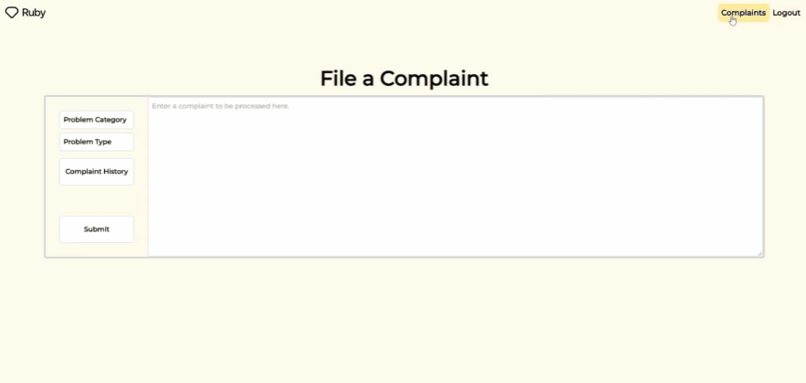

Intro
As a senior studying Computer Science at Hunter College with
hands-on experience in both software and cybersecurity, I've built
and deployed full-stack applications, automated vulnerability
workflows, and contributed to internal tools for NYC Parks.
Through projects like Rhythma, which supports content creators with
a combined reach of 6,000,000+ followers, I'm confident in my
ability to build scalable platforms and optimize manual processes.
I'm currently learning everything about the world of cloud, which
will help me provide a greater impact in my projects and
professional life. Feel free to reach out with any questions! I love
to talk about everything and anything tech!
Experience
New York City Department of Parks & Recreation
Cyber Security Intern
-
Enabled 90% compliance across 5,000+ endpoints by implementing
patching pipelines and system hardening protocols.
-
Reduced manual workload by 95% (25hrs/week) by automating
vulnerability tracking with Microsoft Power Automate and the Armis
Threat Intelligence API.
-
Drove a 75% reduction in organizational cyber risk by identifying
high-risk software using Armis, Rapid7, and PDQ to design
initiatives to remove or auto-update vulnerable applications
across workstation images.
Headstarter AI
Software Engineer Fellow
-
Developed 5 full-stack web applications integrating AI
technologies while focusing on solutions that acknowledged and
addressed user issues.
-
Collaborated with a team of 4 to achieve the goal of onboarding
1,000 users to a waitlist platform.
-
Presented applications and insights to mentors from industry
leaders such as Amazon, Bloomberg, and Capital One, demonstrating
analytical and communication skills.
CodePath
Student
-
Collaborated on a team of 4 using appropriate data structures and
algorithms to solve, and later optimize, challenging coding
problems.
-
Became proficient in advanced problem solving techniques,
enhancing my ability to write clean and scalable code and
strengthening my performance developing real world applications.
Cold Spring Harbor High School
Teachers Assistant
-
Reinforced and broadened my proficiency in computer science by
delivering clear and effective instruction of core concepts.
-
Developed a deeper understanding of important data structures,
algorithms, and core concepts through hands-on teaching methods
and thorough explanation of complex topics.
Selected Projects

Rhythma - Map Hosting For Osu Content Creators
-
Drove 100% of technical strategy and execution, leading the design
and implementation of a file-hosting platform using React.js,
Node.js, and PostgreSQL, to support content creators with a
combined reach of 6,000,000+ followers.
-
Eliminated 97% of manual processes by automating file data
collection through direct API integration.
-
Reduced API usage by 95%+ per session and eliminated 100% of rate
limit failures by integrating a self improving caching system that
stores fetched file data in a PostgreSQL database.

Pawfect Match - Find Adoptable Pets Near You
-
Led a team of 4 to build Pawfect Match using React and NodeJS to
find adoptable pets based on your criteria.
-
Architected 100% of backend functionality, integrating input
sanitization and token-based authentication.

Spend Ruby - Startup Complaint System
-
Developed a full-stack complaint system for a startup utilizing
the PERN stack which enables users to submit complaints regarding
specific aspects of the site.
-
Implemented an admin/employee dashboard with search filter
functionality to offer easy and instant access to all filed
complaints.

InstaRecipe - AI Recipe generator
-
Built an AI recipe generator utilizing the OpenAI API to receive
user input and respond with a recipe according to the users
ingredients.
-
Utilized JavaScript, React Native to develop the frontend, and
express/axios to develop the backend and handle routes.
Contact Me